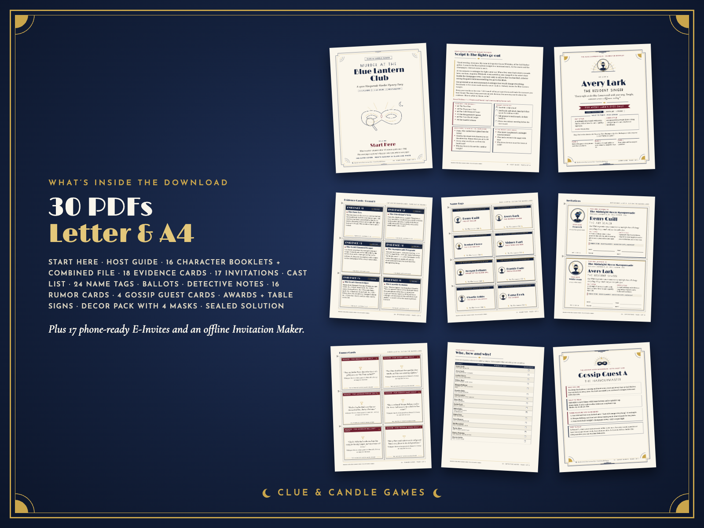
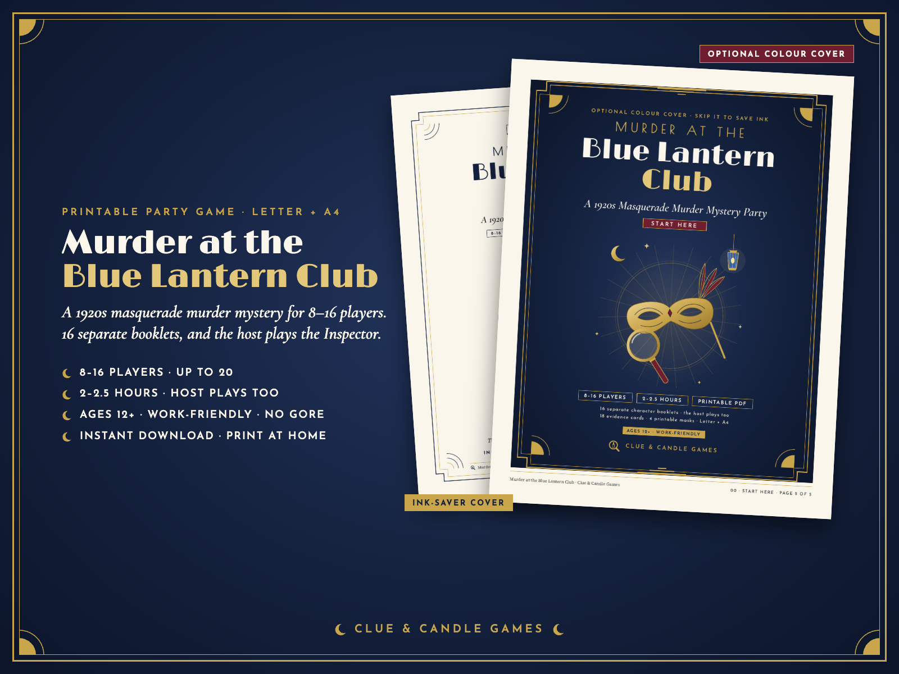
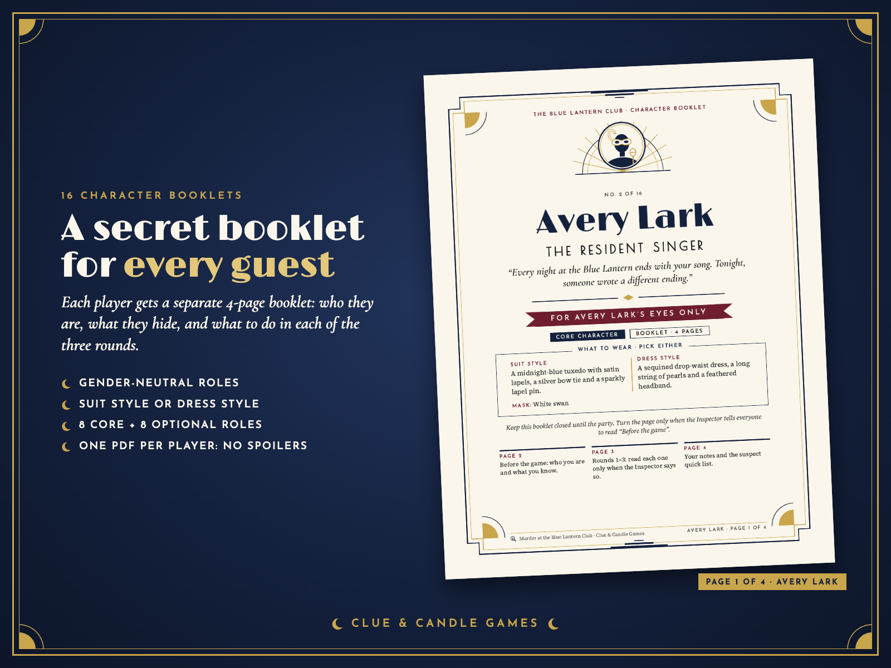
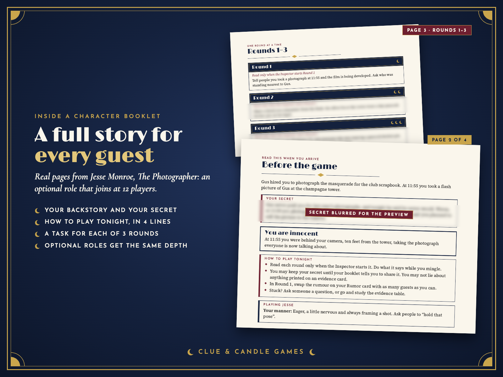
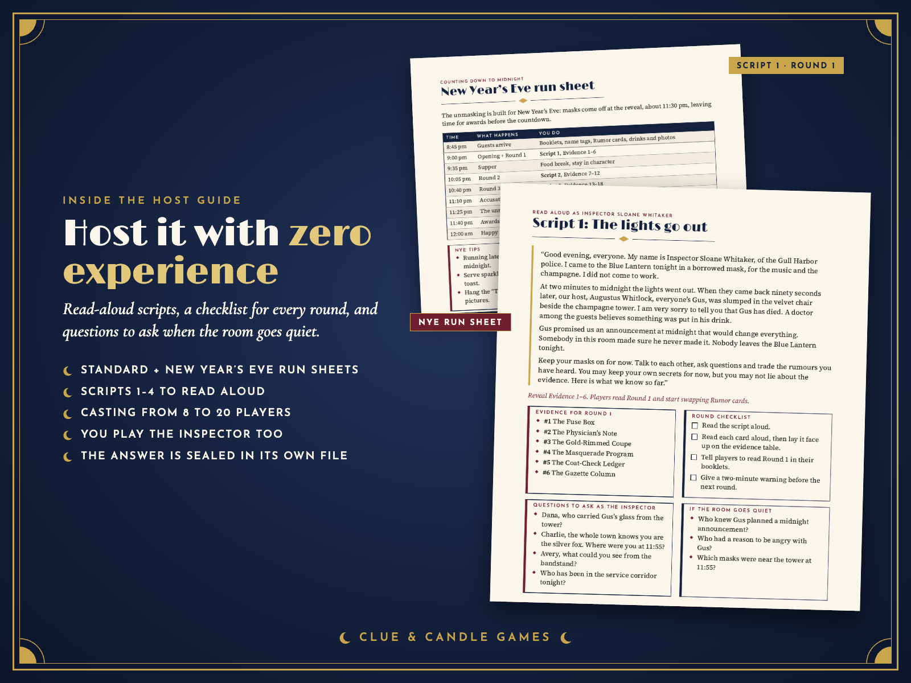
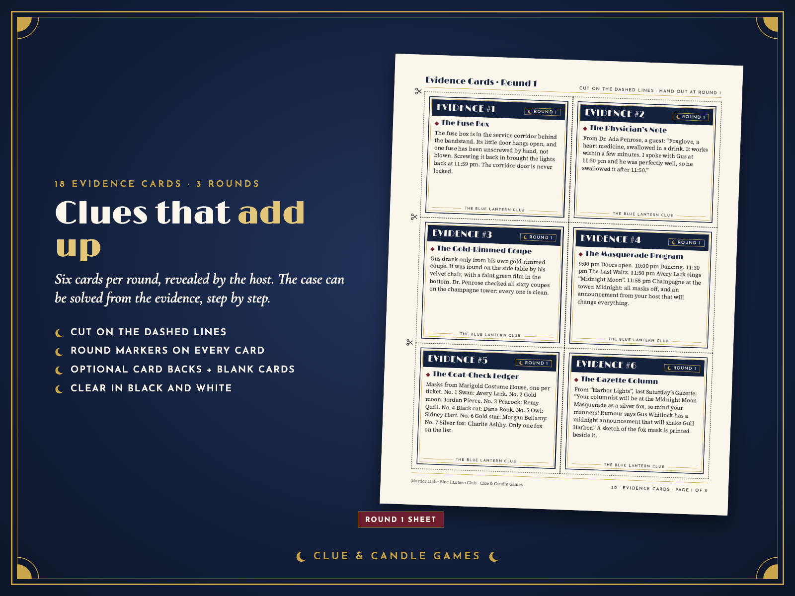
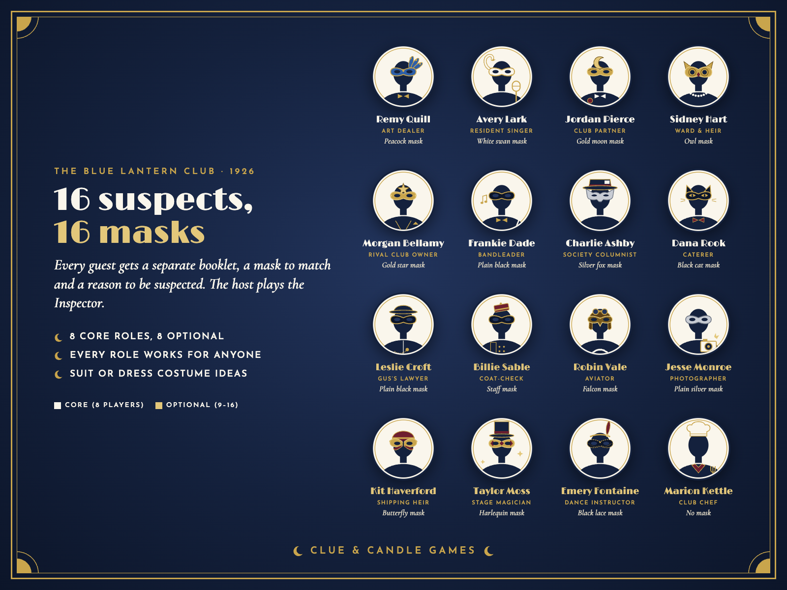
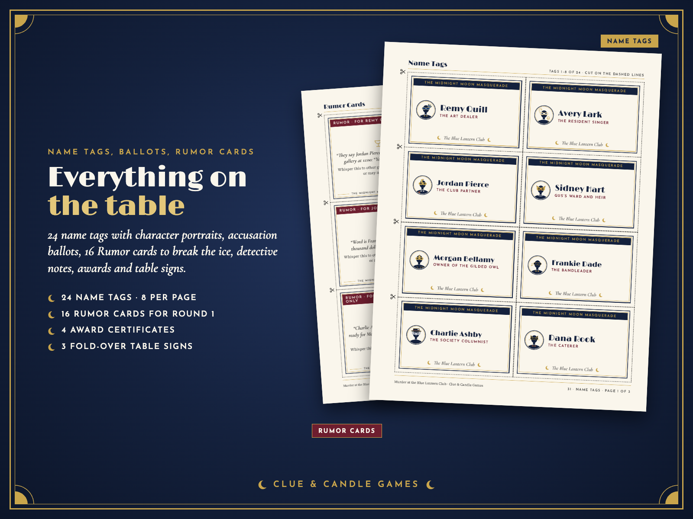
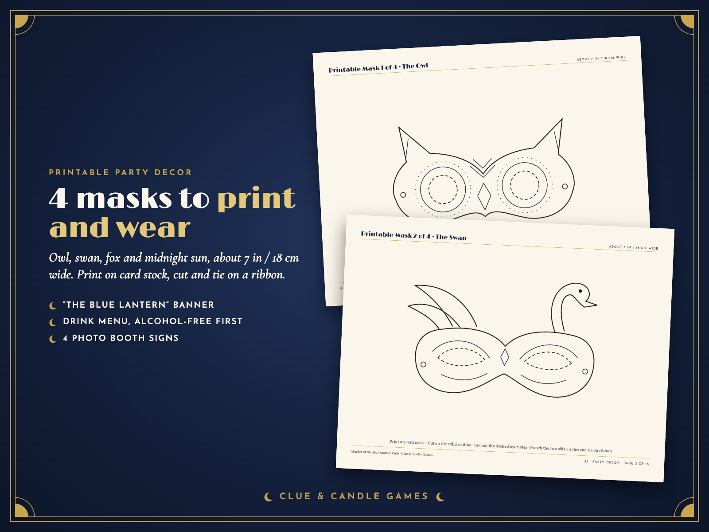
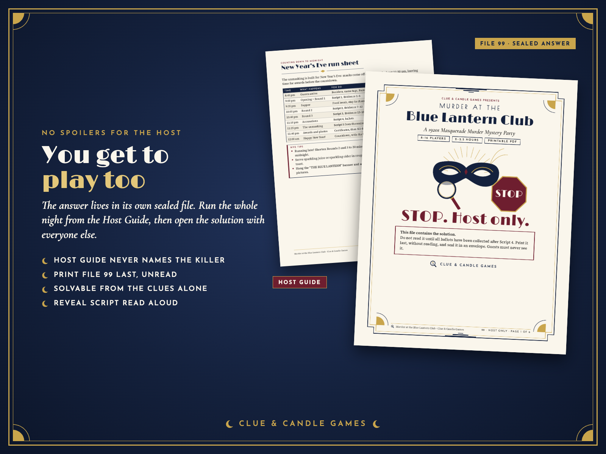

Printable, 8–16 players (up to 20), about 2–2.5 hours, ages 12+. 16 separate character booklets, and the host plays the Inspector. A cozy, work-friendly 1920s masquerade whodunit for birthdays, New Year's Eve and team parties. From Clue & Candle Games, the party-games imprint of Hustle Studio.

$19.00 USD, one-time, for the whole party (about $1.19 per guest at 16 players)
Buy now: $19🔒 Secure checkout. Payment is handled by Waffo Pancake, our merchant of record, with common payment methods such as major credit and debit cards. Waffo processes the payment, handles any sales tax or VAT that applies and emails you a receipt. We never see your card details.
📥 Instant download. After payment you go straight to your download page. Nothing is shipped, and there's no subscription.
↩️ 14-day no-questions refund. Email us within 14 days of purchase and we'll refund you. You don't need to give a reason.
🎭 Party guarantee. If the game didn't run smoothly for your group, tell us within 14 days and we'll refund you in full.

One ZIP download, Murder-at-the-Masquerade_ClueAndCandleGames.zip. It holds two folders, US-Letter/ and A4/, with the same 30 PDFs in each (each made at its real paper size), plus an E-Invites/ folder with 17 phone invitations and Invitation-Maker.html. After purchase, every file can also be downloaded on its own from your download page.
Murder-at-the-Masquerade_ClueAndCandleGames.zip ├── US-Letter/ (30 PDFs) │ ├── 00-START-HERE.pdf 5 pages: what to print, players table, 15-minute quick start, FAQ │ ├── 01-Host-Guide.pdf 15 pages: checklist, casting 8–20, cancellations, standard + NYE run sheets, Scripts 1–4, tips, menu │ ├── 02-Invitations.pdf 10 pages: 16 character invitations + 1 Mystery Guest, copy-and-paste text page │ ├── 03-Cast-List.pdf 3 pages: all 16 characters and the victim (safe for everyone) │ ├── 10-Booklet-Remy-Quill.pdf … │ │ 25-Booklet-Marion-Kettle.pdf 16 character booklets, 4 pages each │ ├── 26-All-Booklets-Combined.pdf 64 pages (optional, every booklet starts on a new sheet) │ ├── 30-Evidence-Cards.pdf 5 pages: 18 cards, 6 per page, card backs + blank cards │ ├── 31-Name-Tags.pdf 3 pages: 24 tags │ ├── 32-Accusation-Ballots.pdf 2 pages: 4 per page + scoring rules │ ├── 33-Detective-Notes.pdf 2 pages: suspect table, 9 pm–midnight timeline, evidence tracker │ ├── 34-Awards-and-Table-Signs.pdf 7 pages: 4 certificates + 3 fold-over table signs │ ├── 35-Party-Decor.pdf 15 pages: 4 masks, THE BLUE LANTERN banner, drink menu, 4 photo booth signs │ ├── 36-Rumor-Cards.pdf 3 pages: 16 cards, one per character │ ├── 37-Gossip-Guest-Cards.pdf 4 pages: 4 extra roles for 17–20 players │ └── 99-SOLUTION-Host-Only.pdf 6 pages: STOP page, answer, 7-step clue chain, why the others didn't do it, Script 5 ├── A4/ (the same 30 PDFs in A4 size) ├── E-Invites/ (17 PNGs, 1080 × 1350: 16 characters + Mystery Guest) └── Invitation-Maker.html (works offline in any browser; uploads nothing)
Every preview below is built from the real PDF pages. The only blurring hides secrets and later-round clues so the mystery isn't spoiled. Your downloaded files have no blurring.









Not sure yet? The Case of the Cold Cocoa is a free 10-page printable mini mystery for 4–6 players (about 45 minutes) by the same team, in the same style: host scripts, evidence cards, ballots and a solution with its full clue chain. No email or signup needed.
Download the free mini mystery (PDF)Gull Harbor, 1926. At the Blue Lantern Club, owner Augustus "Gus" Whitlock is hosting the Midnight Moon Masquerade and has promised an announcement at midnight "that will change everything". At 11:58 pm the lights go out for ninety seconds. When they come back, Gus is slumped in a velvet armchair beside the champagne tower: something was slipped into his drink. Everyone wore a mask. Everyone had a reason. Who was behind the mask?
Each guest plays one character from a booklet written in the second person, so any guest can play any role, and every booklet has a portrait of that character in their masquerade mask. You, the host, play Inspector Sloane Whitaker: read four short scripts from the Host Guide, reveal six evidence cards per round, and question the suspects. In Round 1 every player swaps the rumour on their Rumor card, so conversation starts straight away. After three rounds everyone fills in an accusation ballot, then you open the sealed solution, read the unmasking script and hand out the awards.
The Host Guide is written for first-time hosts: a tick-box prep checklist, a casting table from 8 to 20 players, what to do if someone cancels, a standard run sheet (2–2.5 hours) and a New Year's Eve run sheet, Scripts 1–4, hosting tips, music and decor ideas and a menu with alcohol-free drinks. Everything reads clearly in black and white. Start Here and the Host Guide open with an ink-saver line-art cover; the full-colour cover is an optional last page.
Want to send invitations by phone? Use the 17 ready-made E-Invites, or open the Invitation Maker in any browser, type your date, time and place, and download a picture invitation for each guest. It works offline and uploads nothing.
| Players | Characters |
|---|---|
| 8 | The 8 core characters |
| 9–16 | Add optional characters in order, one per extra guest |
| 17–20 | All 16 characters + Gossip Guests A–D |
The host always plays Inspector Sloane Whitaker on top of these numbers.
Clue & Candle Games is the party-games imprint of Hustle Studio, a small independent digital shop. This site is our own store, with no marketplace in between, so you deal with us directly. We're new, so there are no reviews or customer party photos yet, and we won't invent any. Instead, this page shows the real pages, the free mini mystery lets you judge our writing, and the 14-day refund covers you. Hosting question before or during your party prep? Email chenphien@gmail.com and we'll answer hosting questions within 24 hours.
How many people can play?
8 to 16 players each get their own character, plus the host as the Inspector. For 17 to 20 players, extra guests use the 4 Gossip Guest cards.
How long does it take?
About 2 to 2.5 hours with a food break. A New Year's Eve run sheet is included that puts the unmasking at about 11:30 pm.
Can the host play too?
Yes. You play Inspector Sloane Whitaker. The solution is sealed in its own file, so you can solve the case alongside your guests.
Is it really solvable?
Yes. The sealed solution walks through a 7-step clue chain from the evidence cards and explains why each of the other suspects didn't do it. Every clue was checked against the solution.
Are the roles gender-neutral? Is it suitable for work or for teens?
Yes. All 16 roles use neutral names, booklets speak to the player as "you", and every role has a suit-style and a dress-style costume idea. Ages 12+, work-friendly, no gore, no weapons and no romance subplot.
What paper and printer do I need?
Any home printer. Use the US-Letter or A4 folder and print at 100%. Everything works in black and white; skip the optional cover pages to save ink, and use card stock for the masks and signs if you have it.
Are there reviews or customer photos?
Not yet. The game is new, and we won't invent any. That's why this page shows real pages, a whole Round 1 evidence sheet and a booklet's inside pages, and why you're covered by the 14-day no-questions refund.
Can I get a receipt for expenses?
Waffo Pancake is the merchant of record for this sale. It processes the payment, handles any sales tax or VAT that applies, and emails you a receipt. If your finance team needs a company name, address or tax number on it, email us before or after buying and we'll help sort out what's possible.
Who wrote it?
An original story by Clue & Candle Games, written with AI assistance and edited by us; every clue was checked against the solution.
What if it doesn't work for my group?
Email chenphien@gmail.com within 14 days of purchase for a full refund. You don't need to give a reason (see Terms).
$19.00 USD, one-time
Buy now: $19🔒 Secure checkout by Waffo Pancake (merchant of record). Instant download. 14-day no-questions refund. Digital download only; nothing is shipped.